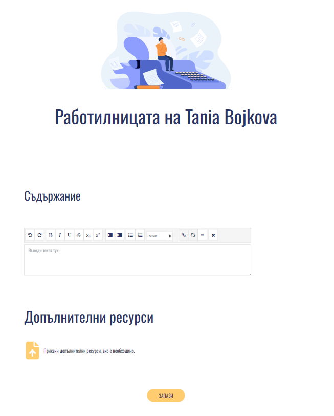
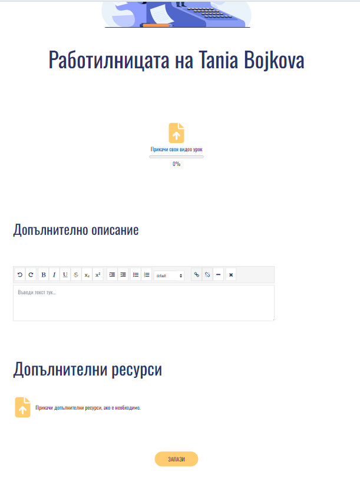
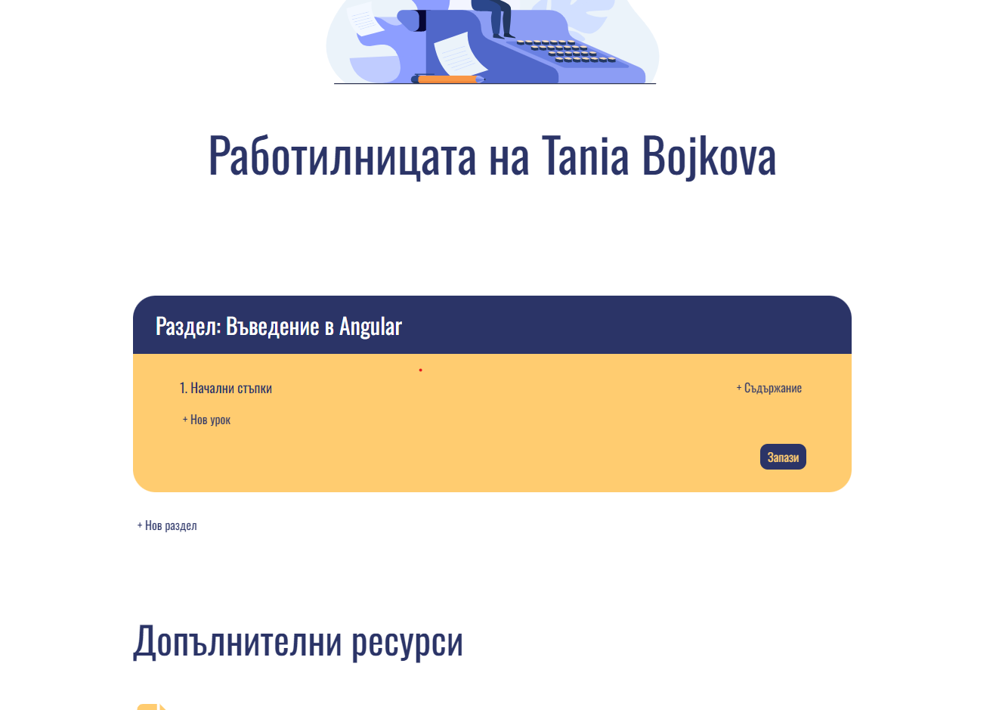
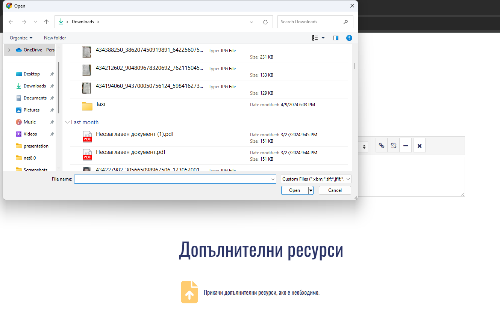

Здравей! Радвамe се, че се присъедини към нашата общност
Решихме създаването на материал да бъде разделено на две части – Създаване на банер и Създаване на съдържание. Предприехме този подход, за да улесним нашите потребители при създаването на своите материали като отделят основното описателното съдържание от същинската част. По този начин потребителите имат по-голям фокус върху създаването на съдържание към своите материали.
Материалите могат да бъдат:
1) Статия
При създаване на статията потребителят разполага с вграден редактор за текст. Той позволява съдържанието на статията да бъде оформено по подходящ начин, с което допринася за потребителското изживяване. Съдържанието на статията има следните опции:
- Удебеляване на текста;
- Курсив;
- Подчертаване на текста;
- Зачертаване на текста;
- Отстъп;
- Неподреден лист;
- Подреден лист;
- Избор на вида на текста (Заглавия от 1 до 7, параграф, стандартен текст, текст по подразбиране);
- Добавяне на хоризонтална черта
- Премахване на стиловете на текста
2) Урок
Разликата при създаване на урок е интерактивната опция за добавяне на видео съдържание. Избирайки иконката за прикачване на файл потребителят може да добави предварително изработен видеоурок. Реализирана е функционалност за проследяване на процеса по прикачване, което помага на потребителят да остане информиран. Ако смята, че има нужда от допълнителни разяснения към своя урок, то може да добави такива в незадължителното допълнително описание.
3) Курс
„ Курсът дава възможност потребителят да обедини по-голямо по обем съдържание на едно място. Умелико позволява на потребителите да настроят структурата на курса си, определят неговата дължина и трудност и изберат подходящо оформление, което да отговаря на стила и нуждите на аудиторията им.
Основните елементи на курса са разделите, в които създателя разпределя уроците си. Разделът е съставен от задължително заглавие и неограничен брой уроци, които потребителят добавя чрез бутона „+Нов урок“ За да добави съдържание към урока си, потребителят трябва да използва бутона „+Съдържание“, където ще бъде препратен на нова страница, наподобяваща тази на урока.
Добавянето на допълнителни ресурси е финалната права на създаването на материал, незадължителна стъпка, но удобна за всеки който желае да добави друга полезна препратка под форма на документ, презентация или друго (по-горе са описани позволените формати). Прикачването става лесно с избиране на иконката, като наведнъж могат да се прикачат повече от един файла.
Филтриране на съдържание
Както вече споменахме, всеки потребител има свободата да създава материали в платформата, но е важно да споменем, че всеки материал, който цели да стане публично достъпен ще минава през одобрението на администратор. Рестрикциите са наложени с цел да гарантират, че съдържанието, което предлага Умелико е подходящо и не включва никакво чувствително съдържание. Всеки новосъздаден материал по подразбиране е видим само за своя създател, което го прави частен (private). Ако потребителят реши да публикува своя материал, което означава той да стане достъпен и видим за всички, то преди свойството за видимост на материал да се промени, той трябва да бъде одобрен. Процесът по одобрение се осъществява с участието на администратора на Умелико. Материалът се превръща в една заявка в администраторския панел, която изчаква своето одобрение или отказ за публикация. След одобрение, материалът става публично достъпен в профила на създателя си. При отказ за публикация, съответния материал остава като частен. За идея имаме администраторът да има възможността да върне обратна връзка към създателя с изпращане на имейл с причините за отхвърляне.